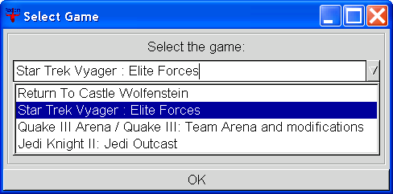
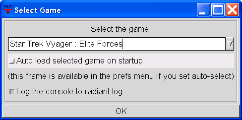

Table of Contents
- Multiple games support in GtkRadiant - Project settings for STV:EF - Compiling and running your maps - BSPC, prepare the map for single player AI - ICARUS and advanced AI Scripting - Troubleshooting The purpose of this document is to highlight the parts of GtkRadiant which have changed in the new version 1.2. We also discuss the basics of level editing for Star Trek Voyager : Elite Force. This is not the GtkRadiant manual, or a mapping howto though. (those topics are covered in other help documents, and on websites). Multiple games support in GtkRadiant GtkRadiant supports level editing for multiple games through a central installation and some game specific packages. In the case of Star Trek Voyager : Elite Force for instance, the editor installs in C:\Program Files\GtkRadiant and puts the game package in C:\Program Files\Raven\Star Trek Voyager Elite Force\Radiant (these are default paths on win32, your mileage may vary). When you execute the editor from the Start Menu, it will look for installed game packages. If only one game pack is present, then it will start loading for this game directly, otherwise it will prompt you with the general preferences dialog, asking you which game you want to edit for.


Game selection dialog The files describing which game packs are installed and where are in the C:\Program Files\GtkRadiant\games folder. They are created during setup to match your particular settings. Once you have selected Star Trek Voyager : Elite Force, the editor will continue loading using STV:EF configuration. If it is the first run, it will create a default project configuration for you. You can view and edit your project configuration from the Files > Project settings... menu.
Project settings dialog in STV:EF mode The only thing you should have to modify in the project settings is the mapping mode combo menu. Select the right configuration depending on whether you are doing single player maps or multiplayer maps. For instance this will change how Star Trek Voyager : Elite Force is executed after you compile a map. A bit more of information about the project files: those are .qe4 files in C:\Program Files\Raven\Star Trek Voyager Elite Force\mainEf\scripts. There is a very particular file there, quakev2.qe4 which Radiant uses to generate your actual project. You should never modify this file unless you know what you are doing. The project files that Radiant uses for everyday run are the user*.qe4 files. Compiling and running your maps Any map (i.e. .map file) needs to be 'compiled' into a .bsp file in order to be loaded into the engine. This is done by q3map, a compiling utility. GtkRadiant provides two ways of compiling maps. It can be done non-interactively by generating a batch file, or you can use the monitored mode. This is configured from the Edit > Preferences... menu, in the BSP monitoring tab.
BSP monitoring preferences When you run a monitored compilation, you can follow the progress of q3map in the editor console. If the compilation fails because of errors in your map, you will be able to get a clean error message and in some cases, a debug window will popup which will help you locate the problem. You can also tell the editor to run the map in the engine when the compilation is done (with some 3D board you may have to turn on "activate sleep mode" so that you have enough OpenGL resources to run the engine) Also note that several sample maps (namely voy1, _brig and ctf_kln1) are provided in the setup. Those are a great source for learning. BSPC, prepare the map for single player AI If you are doing a Multi-player map, and you want support for Bots in the solo match area of Holomatch, you will need to build an .aas file, so that the AI (Bots) know where to run. For instance, if you map is foo.map, you will compile foo.bsp with q3map, and with BSPC you will have to produce foo.aas. A batch file is provided to help the process (BSPC compiling is not integrated into GtkRadiant at the moment) which you can find in C:\Program Files\Raven\Star Trek Voyager Elite Force\Radiant\makeaas.bat. Or download bspc-gui ( A graphic user interface that acts as a front end for BSPC) from http://www.effiles.com @echo off setlocal rem Enable this next line to compile maps without debug info (put in a rem to enable debug info) rem set extraparms=-optimize bspc -threads 1 -ext _b0 -cfg aascfg_sm.c -bsp2aas ..\baseEf\maps\%1.bsp -output ..\baseEf\maps %extraparms% copy bspc.log temp_b0.log bspc -threads 1 -ext _b1 -cfg aascfg_lg.c -bsp2aas ..\baseEf\maps\%1.bsp -output ..\baseEf\maps %extraparms% copy bspc.log temp_b1.log .arena, Getting the map to show in the menu. You will need a .arena file in the scripts folder. you can D/L ArenaGen at http://www.effiles.com or open one to look at how they're made. ICARUS and advanced AI Scripting An important part of the Star Trek Voyager : Elite Force was the single player scripted sequences. This is too broad a subject to embark upon here, and truly it is beyond the scope of this level editor HOWTO, but included in the GTKRadiant package is the ICARUS manual in .html format. Feel free to read it and to experiment with BehavEd, the level and AI scripting tool, which is also included in this distribution. If the editor doesn't work correctly, make sure that your installation is not broken, i.e. you have installed newer version above an older one, or you are trying to use and editor binary with incompatible modules and tools (i.e. that came from other sources). Carefully examine the console of the editor for any error and warning messages. Some important things are happening while the editor is starting, before the console is available, this is why it is possible to have Radiant log everything to a radiant.log file (which will be in C:\Program Files\GtkRadiant\radiant.log). You can turn logging on from the preferences menu. If that fails, see the links page that comes with GtkRadiant setup to find forums and help. In the editor, the Help menu provides a number of useful shortcuts.
|